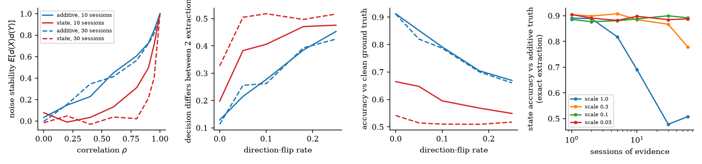

Language-model agents store decisions as text and expose no explicit model of how the order and timing of evaluations shape a choice. We propose a quantum-probability decision state: a compact external memory in which each role holds a density matrix, evidence acts as rotations generated by non-commuting criterion operators, commitment is a Lüders projection, and stored decisions drift toward a default under an open-system channel. We take the QQ equality as a falsifiable test of order effects, an overlap law for schedule-dependent drift, and proportional output feedback to keep coupled roles coordinated. Quantum probability is used purely as mathematics on ordinary computers.
An agent that decides for several stakeholders (finance, engineering, operations) usually keeps a long transcript and re-reads it for every decision. Cost grows with history, and the order and timing of the evidence are left implicit.
We replace the transcript with a decision state: a small density matrix per role, updated in plain code. The memory cost per decision is $d^2-1$ real numbers, whatever the length of the history.
The question under test is not “is this more accurate than an LLM?” but whether such a state can keep a long decision history cheaply, show human-like order effects, and be controlled through timing and feedback.
For role $r$ the state is a density matrix $\rho_r$. An answer $x$ to a question is a projector $P_x$, and its probability is read straight from the state:
In the two-dimensional illustration, $\rho=\tfrac12(I+\boldsymbol r\cdot\boldsymbol\sigma)$ is a point in the Bloch ball. The north pole is “approve”; the south pole is the default, “do not approve”.
Human survey data violate this reciprocity, so realistic answers need subspaces of rank $\ge 2$, and the stored state lives in $d\ge 3$ dimensions.
Each role evaluates a criterion with a Hermitian generator $G_r=\hat{\boldsymbol n}_r\cdot\boldsymbol\sigma$. Evidence of strength $\theta$ about that criterion acts as
Each criterion is a rotation axis. Different roles get different axes, so their evidence moves the state in different directions.
We call this norm the conflict between two roles: zero for compatible criteria, maximal for perpendicular ones. In simulation, order sensitivity tracks it with Pearson $r=0.86$.
Worked example: a solar project. Cost about $y$ with $\theta=-0.3$, risk about $x$ with $\theta=-0.4$, timing about $z$ with $\theta=0.6$, prior polar angle $1.40$. The same three pieces of evidence, in six orders:
For two questions answered back to back, with nothing else changing the state in between, quantum probability predicts a parameter-free equality:
| Data set | $N_{AB}/N_{BA}$ | $q$ | $z$ | $G^2_{\text{QQ}}$ | $G^2_{\text{rank-1}}$ | $P(B|A)$ / $P(A|B)$ | Best AIC |
|---|---|---|---|---|---|---|---|
| Clinton–Gore | 447/432 | −0.003 | −0.11 | 0.01 | 104 | 0.92 / 0.74 | QQ-constr. |
| Gingrich–Dole | 437/377 | −0.003 | −0.09 | 0.01 | 235 | 0.83 / 0.50 | QQ-constr. |
| White–Black | 459/486 | −0.019 | −0.75 | 0.56 | 188 | 0.96 / 0.87 | QQ-constr. |
| Rose–Jackson | 506/462 | +0.151 | +5.30 | 28.56 | 106 | 0.51 / 0.86 | Saturated |
| Racial hostility (lab) | 116/108 | +0.076 | +1.22 | 1.48 | 62 | 0.81 / 0.83 | QQ-constr. |
| Affirmative action (lab) | 118/106 | +0.043 | +0.83 | 0.69 | 26 | 0.92 / 0.81 | Order-free |
Inserting evidence, a reminder or drift between the questions generically gives $q\neq0$: delay itself becomes a prediction. Caveat: symmetric classical carry-over also satisfies $q=0$ (Prop. 4), so the equality alone cannot separate quantum from classical accounts.
Commitment is a Lüders projection: answer $x$ occurs with probability $p_x=\operatorname{Tr}(P_x\rho)$ and the state becomes $P_x\rho P_x/p_x$.
Review with intensity $s\in[0,1]$ is an unsharp measurement; $s=1$ is commitment, $s=0$ leaves the state alone:
Drift. Between operations a stored decision interacts weakly with its information environment and relaxes toward the default, the status quo. Each stored state carries a timestamp, so staleness is part of the memory.
From dynamical decay control: the drift rate of a stored decision is the overlap between the spectrum of its information environment $G$ and the spectrum of its review schedule $F_\tau$.
Frequent review broadens $F_\tau$. Resonant decision: broadening lowers the overlap (decision Zeno). Detuned decision: review near the environment's correlation time raises it (decision anti-Zeno, up to $2.11\times$).
Linearise each role near its default. Outcomes are observed with noise, $y=Cx+v$, with observation efficiency $\eta\in(0,1]$. Proportional feedback $u=g\,y$ gives the closed loop
The gain pulls roles together (useful) and injects observation noise in proportion to $g^2$ (harmful). So there is an interior optimal gain, and it falls as observation gets noisier.
Without feedback, cross-role mutual information can fall below the level joint action needs in finite time: coordination sudden death (Def. 1).
A small model reads each evidence item once. Everything between extraction and the final answer is plain code with no tokens. A larger model reads only a one-line description of the state.
Orchestration benchmark (e8): small extractor, large answerer, three runs on templated multi-role evidence. Placeholder prices.
A noise-stability analysis (e10, no API) separates extraction noise from the state's functional form. Even with exact extraction, the state's decision agrees with an order-independent additive rule only:
Non-commuting rotations make the decision depend mainly on recent evidence. Small rotations restore agreement, but then the order effects disappear, and with them the property the framework is built to produce.
So an additive ground truth is not a fair test. Whether the state beats order-blind memories on order-dependent tasks is untested; e11_accuracy_eval.py is written for it.

The framework makes no claim that brains or language models are quantum systems. Its value, if any, is an explicit and testable model of order and timing, with preregistrable human and agent experiments to test it.
Paper, simulation package (24 tests, experiments e0–e11) and raw results: github.com/lalit-aditya/quorum-state · Licensed under the Apache License, Version 2.0.